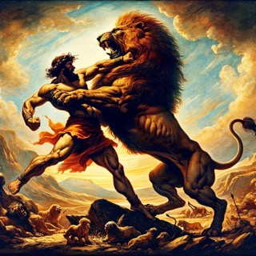

The Legendary Feats of Sampson
- Slaying a lion with his bare hands
- Defeating an army of Philistines with the jawbone of a donkey
- Carrying the gates of Gaza on his shoulders
Comparison of Feats
| Feat | Impact |
|---|---|
| Lion's Slaying | Showcased his unmatched strength and divine empowerment |
| Battle with Philistines | Highlighted his role as a deliverer for Israel |
| Gates of Gaza | Demonstrated his strategic prowess and physical might |